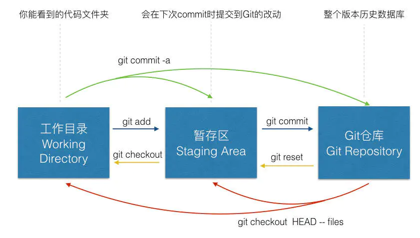

An Introduction to Git

git checkout 用于切换分支或恢复工作数文件，它是一个危险的命令，因为这条命令会重 写工作区。
git ls-files 查看缓存区中文件信息，它的参数有，括号里面是简写
–cached (-c) 查看缓存区中所有文件
–midified (-m)查看修改过的文件
–delete (-d)查看删除过的文件
–other (-o)查看没有被 git 跟踪的文件
1. Get back to an old version
git log can show the history of your commit.
git reset xxx will git back to an old version. However, the workspace will not
change, i.e., the workspace is also the current workspace.
git reset --hard xxx will get back to an old version, and the workspace will
be also the old version.
To get back to the newest version git reflog can show the reference logs
information. It records when the tips of branches and other references were
updated in the local repository. The code of the newest version will be
observed.
2. Clone too slow
The network speed of git clone is often very slow in China mainland. To
improve the speed, I often clone by ssh, i.e., use the ssh link instead of
https link. However, it need to change the link. Use
git config --global url."https://mirror.ghproxy.com/https://github.com".insteadOf https://github.com
can download repos fast without changing the links. It will write some thing in
the ~/.gitconfig file.
When the .gitconfig file is
1 | [user] |
If you clone a repo by git clone https://github.com/xxx/xxx.git, it will
actually clone from https://mirror.ghproxy.com/https://github.com/xxx/xxx.git.
Thus the mirror is used.
However, it may cause some trouble when git push is used for your own repos.
Use ssh will work fine for it only replace https://github.com and ssh uses
git@github. The url in .gitconfig file have no effect on ssh push/clone or
pull.
3. .git folder is too big
Usually .git/objects/pack folder is contain three files.
.packfile which contain all the commit information..idxfile is the index of the history in.packfile..revfile is related to the reverse index information.
Use the following snippets to shrink the .git folder:
1 | # list the biggest 10 files. |